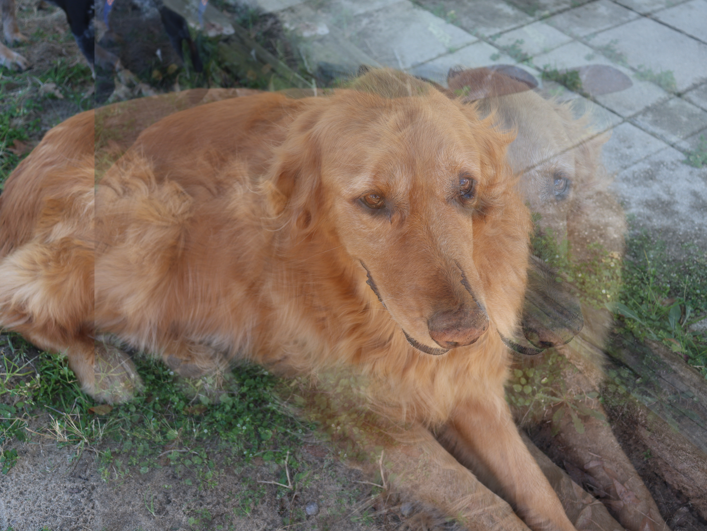

Distorted images feel like echoes of something that once existed clearly. As compression increases, clarity fades, but emotion intensifies. What disappears becomes part of the message.
Glitches repeat like memories replaying in the mind. Edges shimmer, colors misalign, and fragments overlap. The echo is not empty — it carries digital residue. Imperfection becomes evidence of time and transformation.

